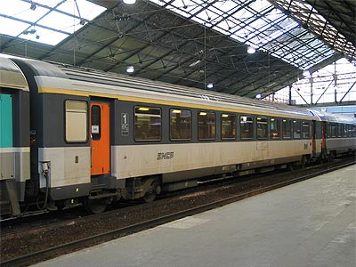
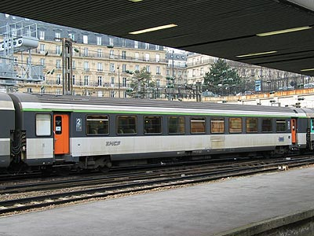
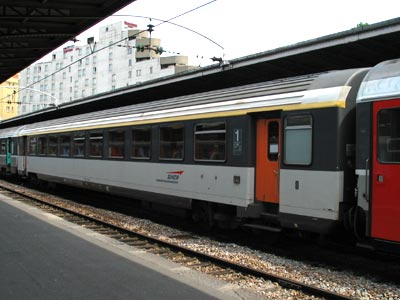
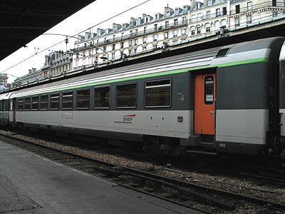
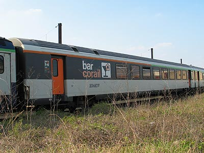
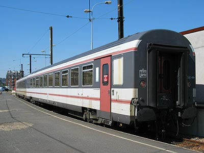
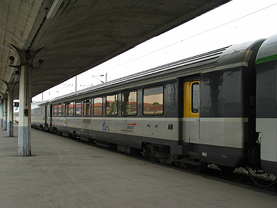
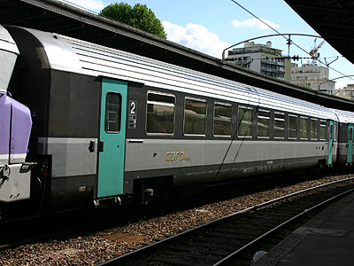

Ferrovia - 29 Octobre 2015
Corail VTU
Les Corail à couloir central
Les VTU reprennent le concept Coach initié par les USI. Une grande salle est équipée de travées de sièges regroupés deux par deux en banquettes. Les voitures reçoivent deux toilettes à une extrémité. A l'autre, l'appareillage ainsi qu'un mobilier de restauration sur certaines voitures. La production de 2335 voitures sera étalée sur plusieurs programmes de construction et selon différents diagrammes. Toutefois, toutes les VTU partagent un chaudron identique. Longueur de 26,400 m hors tampons, largeur 2,825m, entraxe des bogies de 18,306m. 10 baies régulièrement espacées par face plus une lucarne opaque pour chaque toilette. Les bogies sont de type Y32 et présentent les caractéristiques des bogies modernes : châssis en H, longerons cambrés, essieux fixés sur biellettes et double suspension par ressorts hélicoïdaux.
Effectifs et diagrammes
Les VTU sont issues d'une voiture prototype B11tu appelée "Service intérieur longue" construite par les ANF. Cette voiture a depuis été versée au parc de service. Les diagrammes principaux sont A10tu (58 places) pour les voitures de 1e classe et B11tu (88 places) pour les voitures de 2e classe. Certaines voitures dotées de mobilier pour le service de restauration à la place sont nommées rtu. De plus, les voitures de 2e destinées au trafic international bénéficient d'un pas de siège plus grand. Le diagramme est alors B10tu. Les Bar Corail ont un diagramme B5rtux qui consacre la moitié de la voiture à un bar et un salon. Les voitures des programmes de contruction 82 et 84 possèdent des portes louvoyantes. Enfin, les VTU 84 présentent un nouveau diagramme A5B5tu mixte 1e/2e.
Diagrammes apparus par déclassements et transformations
De nouveaux types apparaitront au gré de modifications. Les B5½tu avaient un espace enfants. Les B9½tu ont troqué leurs banquettes contre des sièges inclinables dont le tissu a les mêmes coloris que les sièges des TGV Atlantique et sont incluses dans les trains nocturnes. La percée des TGV a sensiblement réduit la part des Corail aux Grandes Lignes. De nombreuses voitures ont donc été cédées aux régions qui, par modernisation, les ont réaménagées selon des diagrammes variés.
Quelques données techniques
Constructeur : Franco-Belge, Alsthom, Francorail-MTE
Vitesse maximum autorisée : 160/200 km/h
Alimentation des auxiliaires : 1500V cc, 1500V 50 Hz (voitures de service intérieur), également 3000V cc, 1000V 16,7 Hz (Voitures RIC)
Longueur : 26,400 m
Masse : 40 à 46t
Nouvelle Première : Fédora
"Un nouvel art de voyager. Avec Fédora, toutes les conditions sont réunies pour vous offrir un voyage agréable et généreux; vécu comme un moment de détente, de distraction, de communication ou de travail", C'est ainsi que débutait la plaquette publicitaire des Fédora.
Le programme Fédora, lancé en 1984, avait pour but de créer les voitures dites "Nouvelle Première". 9 voitures sont construites sur la base de chaudrons d'A10tu VTU 82 à portes louvoyantes : 2 A2rtu restaurant, 2 A3rt2u bar et 5 A4t4u. Ce sont les ateliers d'Hellemmes qui se chargent des modifications. Les intérieurs sont dus au décorateur François Catroux. Petits salons, fauteuils luxueux pivotants, tons chauds et l'ambiance feutrée que l'on retrouvera plus tard en 1ère classe sur les TGV Atlantique.
Au cours de leur courte carrière, les A4t4u sont renommées en A5rt3u et les A3rt2u en A4rt1u. Ces 7 voitures seront finalement remises au type A10tu pour le compte de la région Rhône Alpes. Les A2rtu ont en revanche conservé leur livrée atypique mais se dénomment désormais Su puisqu'elles ont été absorbées par le parc de service. Elles servent aujourd'hui de voitures de charges lors des tournées Mauzin ou IES sur LGV.
Les A2rtu se distinguent par l'occultation de 2 portes sur les 4 et la présence d'une cuisine.

A10rtu 10-97 017, sigle Tallon, à Paris St Lazare (16/02/2003)

B11tu réversible 21-77 022, sigle Tallon, à Paris St Lazare (07/03/2003)

Voiture apte à l'international A10tu 61 87 10-70 106-0,
sigle Desgrippes, à Paris Est (03/07/2003)

Voiture apte à l'international B10tu 61 87 20-71 341-0,
sigle Desgrippes, à Paris Est (03/07/2003)

Bar Corail B5rtux 85-77 009 à Villeneuve Prairie (11/04/2003)

Su 99-97 138 et 137 ex-A2rtu Fédora utilsées pour les tournées d'inspection des voies (Paris Gare de Lyon, 08/04/2003)

Ancien Bar Corail+ utilisé par TER Champagne Ardennes (Reims, 04/06/2004)

B10tu 20-72 057-1 VTU82 à portes louvoyantes en livrée Nouvelle Déco
et sigles "Corail" (Paris Est, 19/07/2005)